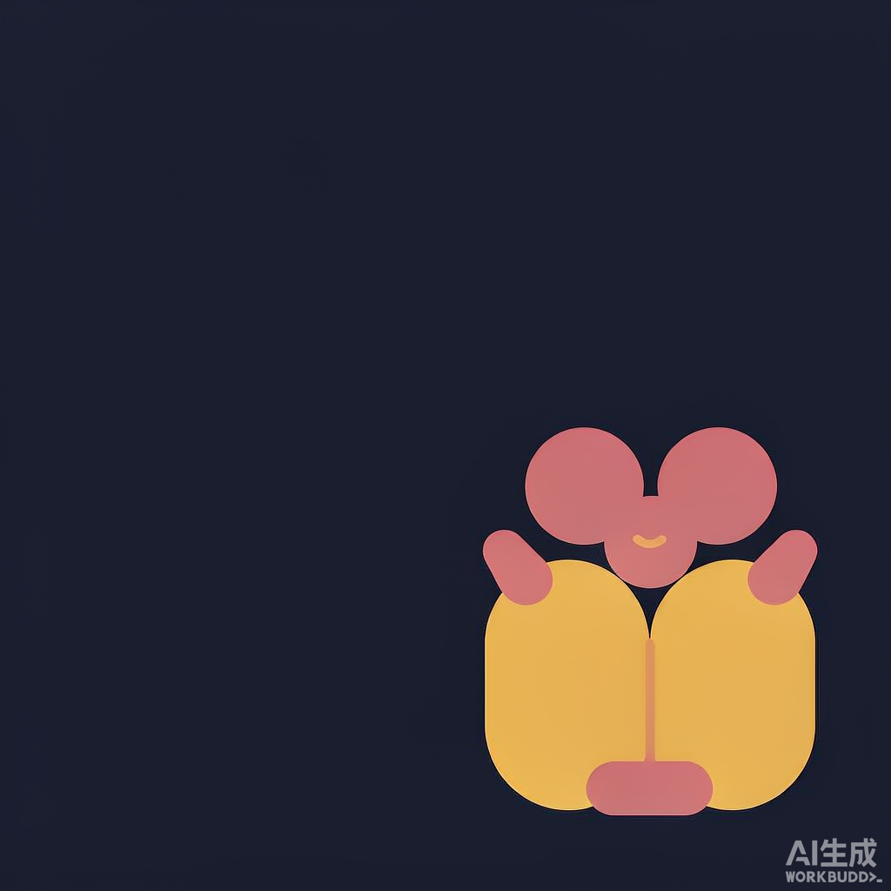
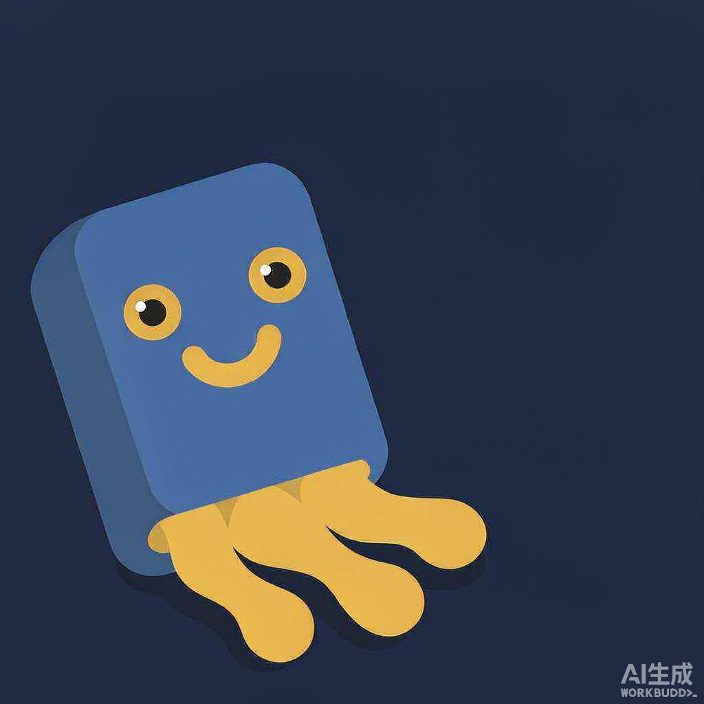
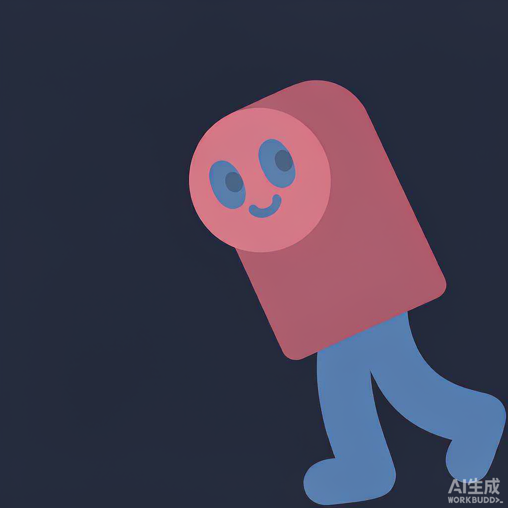
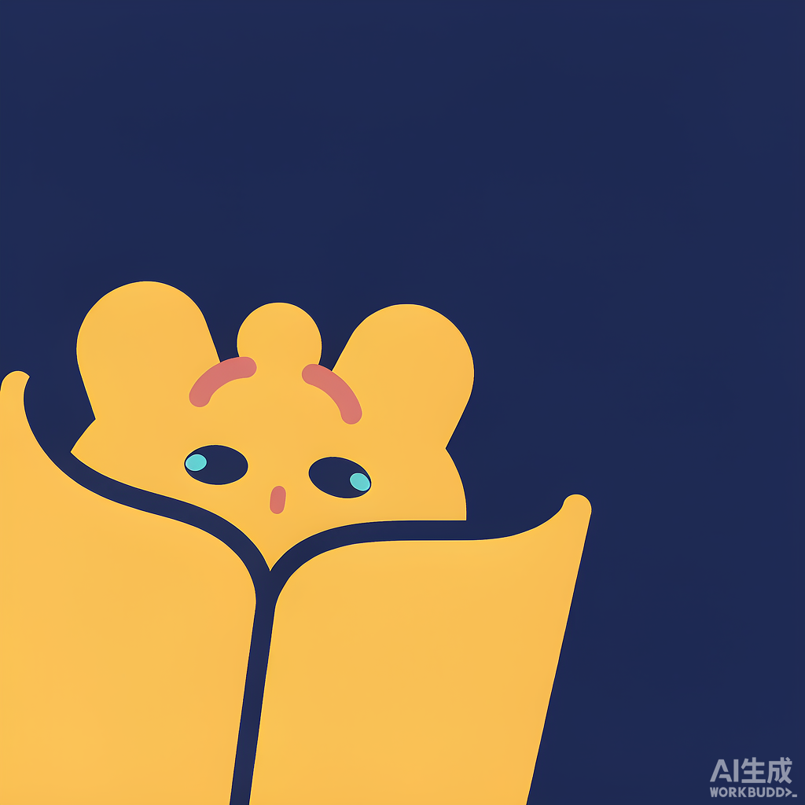
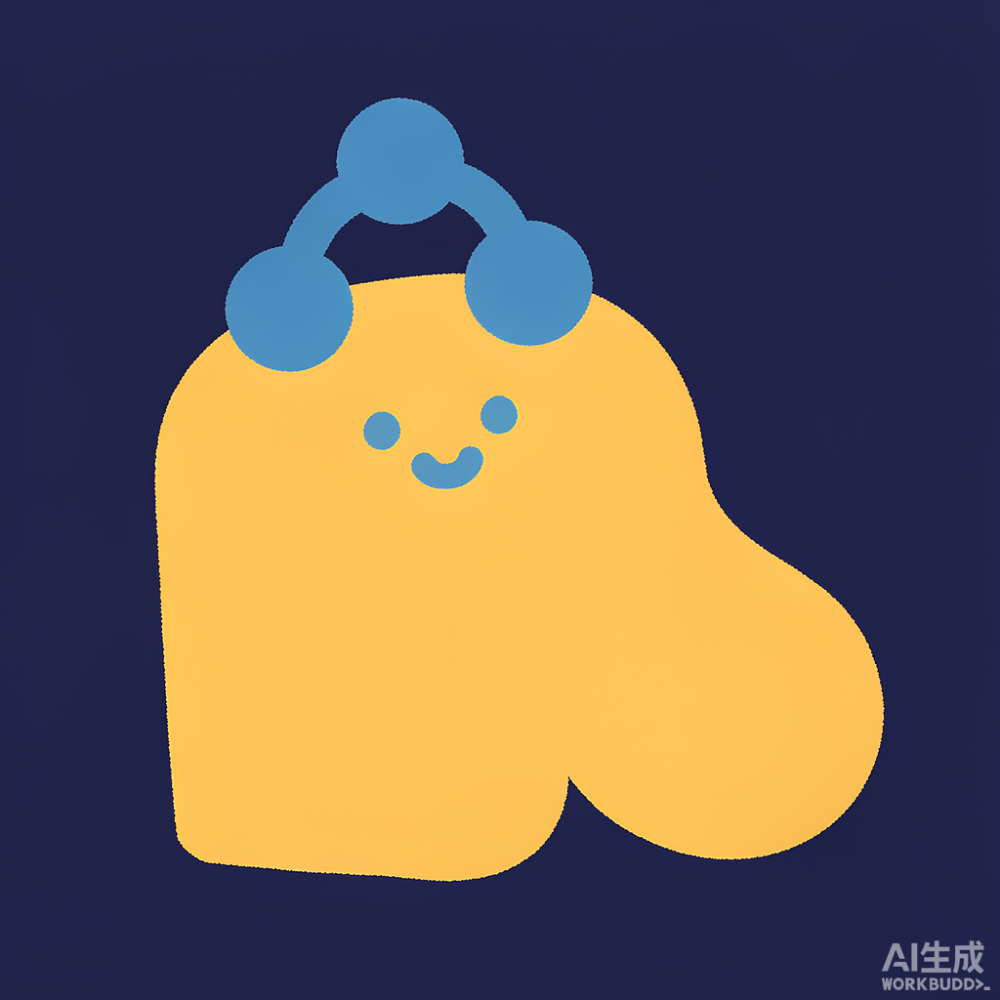

书脉 BookAtlas · IP 候选 6 张
用
ip-as-logo
skill 生成（A/B/C 三方向 × 左下/右下各一张，1024×1024）。
背景统一沿用现有 logo 的深蓝
#1b2233
；每张只用「两个 IP 色 + 一个背景色」，IP 色取自现有 logo 的 金
#d4a343
/ 蓝
#6f9bd1
/ 粉紫
#c96b9d
。
A1
左下
翻开的书 · 书页作翅膀
书页之间浮起三颗节点并连线，最直白对应「关系网」。

A2
右下
翻开的书 · 书页作翅膀
同 A 方向，换粉紫节点，姿态偏「张开欢迎」。

B1
左下
立着的书 · 书页化根须
封面当脸，底部书页往下扎成粗根须——扣「脉 / 家族树」。

B2
右下
立着的书 · 书页化根须
同 B 方向，粉紫封面 + 蓝色根须。

C1
左下
书页作天空 · 节点升起
摊开的书像一块夜空板，节点从书页里升起并连线。

C2
右下
书页作天空 · 节点升起
同 C 方向，蓝色书身 + 金色节点。